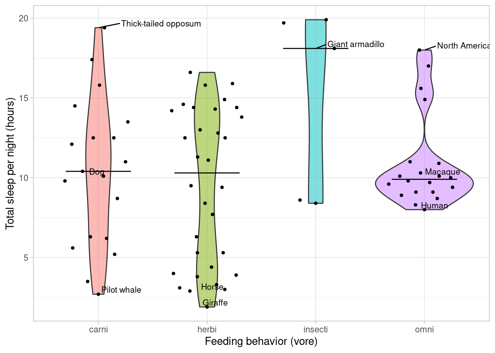
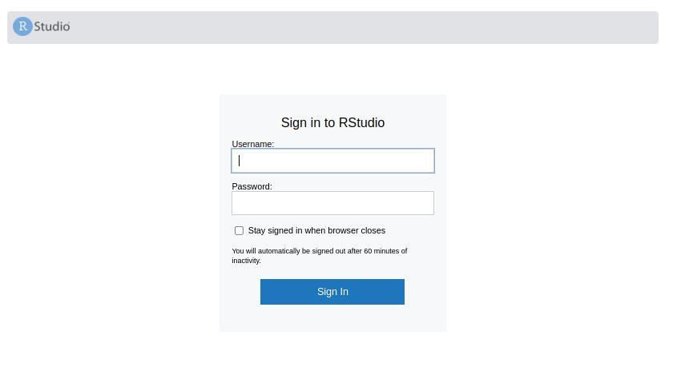
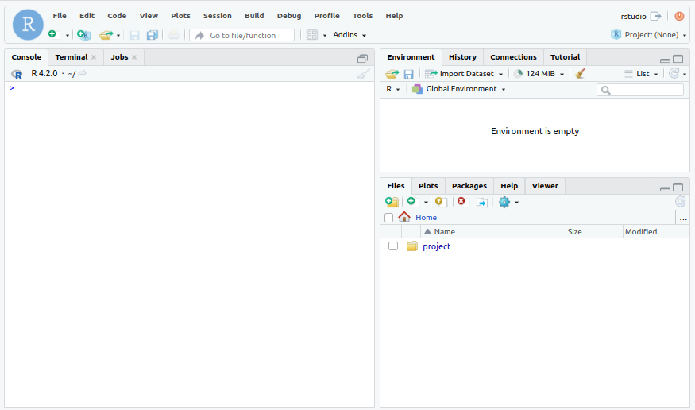
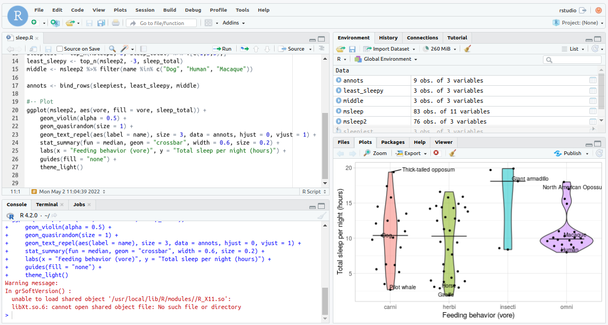

install.packages("renv")The problem
I love working in R because they make data analysis incredibly convenient. But guarding my analyses against package updates has always been a mixed bag. We’re looking at you, DiffBind.
I’ve known about docker for a while, but I always considered it the nuclear option for reproducibility: effective, but complicated and possibly a time-destroyer.
So I decided to give renv a try. It worked well locally during development, but the problem revealed itself when I tried sharing my analysis with my lab mates to test its “reproducibility status”. It was a complex analysis that loaded many packages and their complex dependency trees. It took forever to get up and running in their computers, and required them to Linux libraries making the whole process more than I’d bargained for.
So I thought: “fine, I’ll try docker”. And I think I figured out the magic formula: docker + renv + R scripts = beautiful reproducibility baby.
Docker + renv
For this to work, you’ll need to install docker and renv:
Of course, this works better with Rstudio, but should work regardless. We’ll make a simple analysis here so that this post itself is reproducible.
First, I’ll create a new directory for my project. In the example, we’ll call it, creatively, “example”.
Minimal reproducible script example
First, a note:
Of course for a project of the complexity of this example, all you’d need is an .Rmd (or .qmd 😉) knit into an html. But analyses can get quite complex, and everything I wrote here I have tested in a much more complex real life example I used to organize my code for publication.
Now, let’s create a little analysis:
dir.create("example")Warning in dir.create("example"): 'example' already existsInside this folder, we’ll add all our analysis scripts. In this case, there will be only one: “sleepytime.R”.
Let’s make a fun animal plot: how long to mammals sleep?
library(tidyverse)── Attaching packages ─────────────────────────────────────── tidyverse 1.3.1 ──✔ ggplot2 3.3.5 ✔ purrr 0.3.4
✔ tibble 3.1.6 ✔ dplyr 1.0.9
✔ tidyr 1.2.0 ✔ stringr 1.4.0
✔ readr 2.1.2 ✔ forcats 0.5.1── Conflicts ────────────────────────────────────────── tidyverse_conflicts() ──
✖ dplyr::filter() masks stats::filter()
✖ dplyr::lag() masks stats::lag()data("msleep")
msleep2 <- msleep %>%
select(name, vore, sleep_total) %>%
filter(!is.na(vore))sleepiest <- top_n(msleep2, 5, sleep_total) %>% .[c(1,3,5),]
least_sleepy <- top_n(msleep2, -3, sleep_total)
middle <- msleep2 %>% filter(name %in% c("Dog", "Human", "Macaque"))
annots <- bind_rows(sleepiest, least_sleepy, middle)library(ggbeeswarm)
library(ggrepel)
ggplot(msleep2, aes(vore, fill = vore, sleep_total)) +
geom_violin(alpha = 0.5) +
geom_quasirandom(size = 1) +
geom_text_repel(aes(label = name), size = 3, data = annots, hjust = 0, vjust = 1) +
stat_summary(fun = median, geom = "crossbar", width = 0.6, size = 0.2) +
labs(x = "Feeding behavior (vore)", y = "Total sleep per night (hours)") +
guides(fill = "none") +
theme_light()
We’ll add the results of this very complex analysis to a script (sleep.R), and then activate and freeze our environment.
renv::activate()
# run script
renv::snapshot() # this might take a whileYou’ll then have the file you need, the renv.lock that has all the packages needed. You can download the project files from Github.
Creating our docker
Now we need to create our docker file. There’s a lot more information about it here and a cheat sheet on docker here. But here’s how I think is easiest to do for R reproducible analyses.
My R docker philosophy is that we keep code and data separate from our environment. The docker will only contain the environment to reproduce the analysis. The code and data will be mounted into the docker when it is run. This means you can still modify the code once the docker image has been built and don’t need to build it again every time, as long as you didn’t add any new dependencies in the new code. This will greatly simplify our lives, while still ensuring full reproducibility of results.
That being said, time to assemble the Dockerfile and build our image.
For all R projects, look no further than the Rocker project for all your base image needs. What is the best version will depend on this project, but my general direction is: if you use tidyverse anywhere, use the tidyverse image. Otherwise, use the rstudio image to have a GUI into your environment.
Now, make sure you take a rocker image with the same R version as you. Then, let’s do our Dockerfile:
FROM rocker/tidyverse:4.2.0
# your renv version
ENV RENV_VERSION=0.15.4
RUN apt-get update
# install any Unix libraries after this, e.g. RUN apt-get update && apt-get install cmake
RUN R "install.packages('remotes', repos = repos = c(CRAN = 'https://cloud.r-project.org')"
RUN R "remotes::install_github('rstudio/renv@${RENV_VERSION}')"
WORKDIR /project
COPY renv.lock renv.lock
RUN R "renv::restore()"Write this to a file called Dockerfile in the directory where your analysis is (you’ll see it included if you downloaded the project).
Now navigate to the directory in the terminal and build it (this will take a while):
docker build -t csgroen/blog_example .Make sure you give it a relevant name under the -t (tag) flag. Here, I used my username on DockerHub and a name relevant to this post, i.e. username/image_name, so I can push this later to share.
And that’s it, your environment is dockerized!
If you’d like to download the one I just made instead of building it, just pull it from Docker Hub:
docker pull csgroen/blog_exampleRunning the docker
Before we share it with the world, let’s re-run your analysis.
docker run --rm \
-v path/to/example:/home/rstudio/project \
-p 8787:8787 \
-e PASSWORD=somepassword \
-e USERID=$UID \
csgroen/blog_exampleHere, we are mounting the “example” directory into the “project” directory of our image and preparing the password and username so we can use Rstudio server to connect to the image.
Make sure you use the absolute path/to/example, e.g. /home/myuser/Downloads/example.
Once you run this, you’ll see this message, or something very similar:
[s6-init] making user provided files available at /var/run/s6/etc...exited 0.
[s6-init] ensuring user provided files have correct perms...exited 0.
[fix-attrs.d] applying ownership & permissions fixes...
[fix-attrs.d] done.
[cont-init.d] executing container initialization scripts...
[cont-init.d] 01_set_env: executing...
skipping /var/run/s6/container_environment/HOME
skipping /var/run/s6/container_environment/PASSWORD
skipping /var/run/s6/container_environment/RSTUDIO_VERSION
[cont-init.d] 01_set_env: exited 0.
[cont-init.d] 02_userconf: executing...
deleting the default user
creating new rstudio with UID 1001
useradd: warning: the home directory /home/rstudio already exists.
useradd: Not copying any file from skel directory into it.
[cont-init.d] 02_userconf: exited 0.
[cont-init.d] done.
[services.d] starting services
[services.d] done.This means Rstudio server is ready with your environment and your mounted data. Open your browser to localhost:8787. You’ll see this:

Sign-in with the credentials we created on docker run:
Username: rstudio
Password: somepassword
You’ll be signed into something like this:

See our project folder in the Files. Navigate there and you’ll see our sleep.R script. Open it and run it.

And we’re done: we’ve been able to run the same analysis in the same environment we had when we wrote it.
Sharing
Now that everything works, we can push our docker, and add the example (with the code and data) to Github. In this minimal example, we don’t have any additional data other than the script, but you could add that as well.
Check these instructions.) to push to Docker Hub.
And then add your code/data to a repo on Github, like I did here.
Make a README like this to teach others how to reproduce the analysis:
# Minimal example of reproducible analysis
To run the analysis contained in `sleep.R` in the same environment it was created:
1. Pull the docker image from DockerHub:
docker pull csgroen/blog_example
2. Download this repo (e.g. git clone csgroen/blog_example)
3. Mount the repo into the docker image and run:
docker run --rm\
-v /path/to/example:/home/rstudio/project\
-p 8787:8787\
-e PASSWORD=somepassword\
-e USERID=\$UID\
csgroen/blog_example
where /path/to/example is the absolute path to the repo.
3. Open Rstudio server by opening your browser and navigating to:
localhost:8787
4. Sign-in username: rstudio password: somepassword.
5. Navigate to `/project`, open the `sleep.R` script and run it.Now celebrate achieving the gold standard of reproducibility, something very few are even attempting to do.

Feel free to open issues and hit me up on Github if you have any problems/questions! Toodaloo 👋🏻